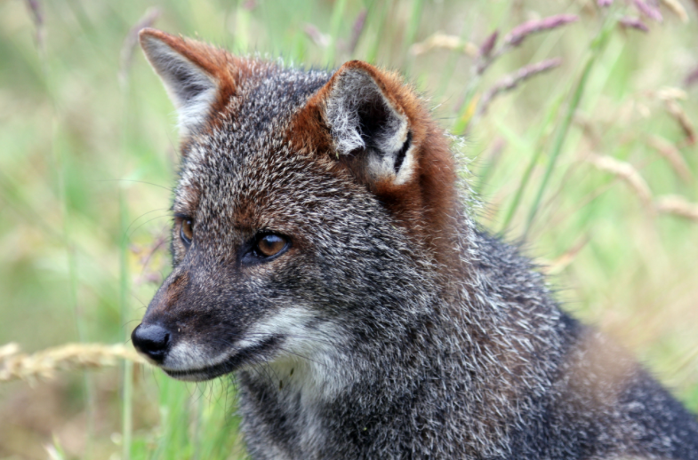
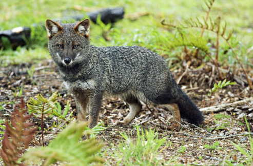
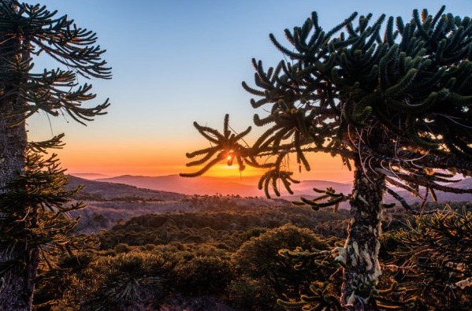
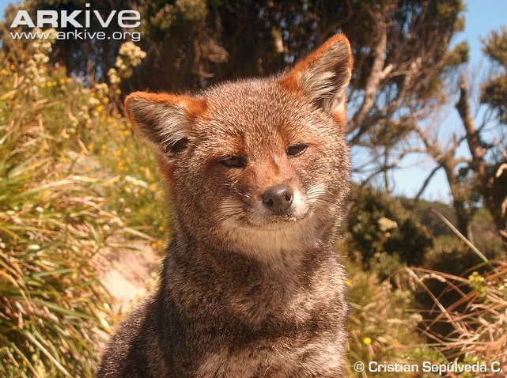

About Darwin's Fox
Darwin's Fox is one of the smallest fox species in the world. The fox was discovered by biologist Charles Darwin on his voyage aboard the Beagle. Because of this event, the fox was eventually named after him. Darwin's fox can be identified by its small frame, rounded forehead, and short bushy tail. Darwin's Fox has an omnivorous diet, meaning that it will eat anything from small animals to fruits and berries.
Where Can I find Darwin's Fox?
Darwin's fox can be found on the island of Chiloé, located in southern Chile, and also on the mainland of Chile in and around Nahuelbuta National Park. The fox lives in a wide variety of habitats including sand dunes, forest, and mountains. Darwin's Fox is only found in the two populations mentioned above, causing the great threats to their existence that we know of today.
  Threats and Conservation
Darwin's Fox is currently considered critically endangered and highly vulnerable to extinction because of its small numbers of population. The Nahuelbuta National Park's population has the greatest threat of unleashed dogs because not only will they attack the foxes, but they will also transmit disease. The population on the island is currently doing well because of its great area of untouched rainforest; however, surrounding areas on the island containing the foxes are threatened by logging.
The current law in Chile has been protecting Darwin's Fox since the year of 1929, but some poaching unfortunately still continues. Initiatives from groups such as Darwin's Fox Research and Conservation Project have helped aid the foxes survival. This group seeks to raise awareness to schools, dog owners, farmers, and loggers about the foxes struggle and how to help keep their population rising in the right direction. For more information on their conservation and on the conservation of other endangered animals, visit the website Species+
